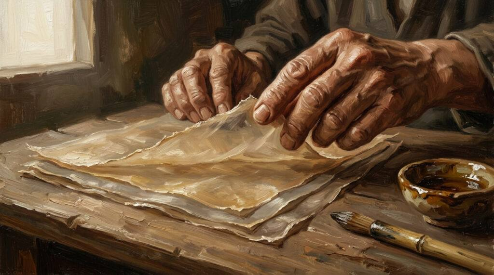
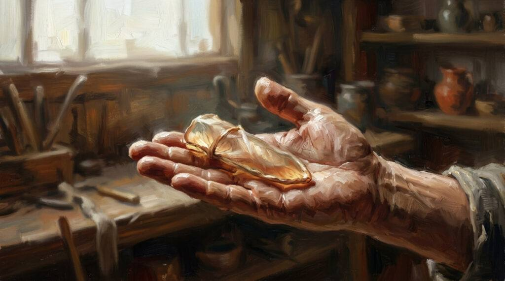
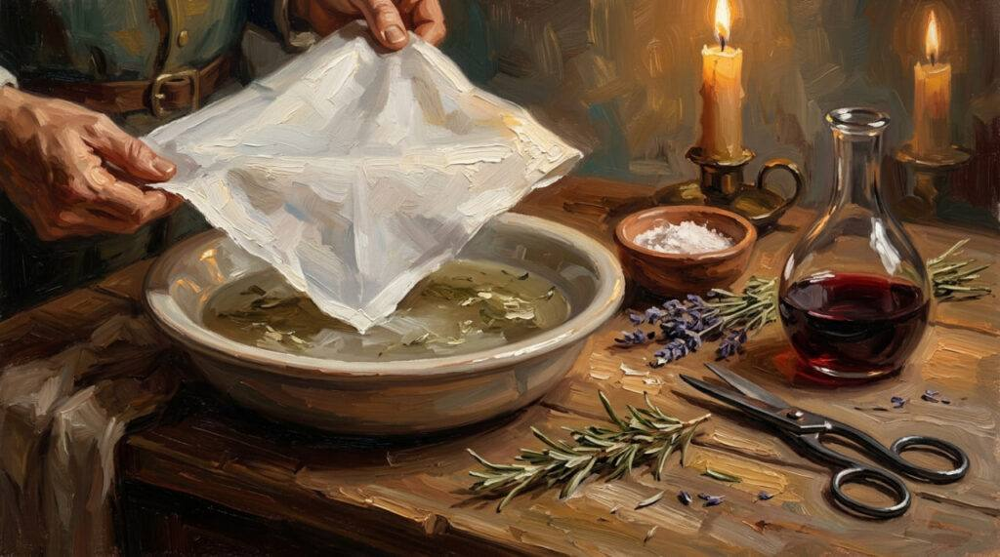

A small square of foil. Carried quietly for centuries. The object that changed what love, risk, and choice mean for the human race.

Think about the last time you walked past a pharmacy shelf and didn’t stop. Didn’t look twice. Didn’t think about it at all. That row of small boxes — so ordinary now, so completely unremarkable — represents one of the strangest, bravest, most contested journeys in the history of medicine.
The condom is roughly 500 years old in its European form, and possibly three times that if you count the silk sheaths of ancient China. It has been carved from tortoise shell, soaked in wine, made by hand in London shops, banned by an act of Congress, and deployed by the tens of millions in the middle of a world war. It has been whispered about, legislated against, joked about, wept over, and credited with saving tens of millions of lives.

And yet most history books treat it as a footnote. A slightly embarrassing detail. Something to mention quickly and move on from.
This article will not do that. Because the history of this small object is, in many ways, the history of how human beings learned to protect each other — from disease, from poverty, from the consequences of choices they couldn’t control. That story deserves to be told in full.
The Condom Through Time
Eight moments, one small object — a long argument between protection and shame.
Silk and Oil
Chinese craftsmen paint fine silk paper with oil — among the earliest condoms we know of.

The Linen Trial
Falloppio tests his linen sheath on more than a thousand men. He records zero infections.
The London Shops
Shopkeepers like Mrs. Phillips quietly build a trade in protection.
The Happy Accident
Goodyear's rubber accident makes condoms cheap. By 1855, they are manufactured, not handmade.
The Ban
America's Comstock Act bans condoms from the mail. The trade goes underground for a century.
Standard Issue
In World War II, armies distribute millions of condoms. Protection becomes equipment.
The Plague Years
AIDS arrives — and the condom becomes a public-health hero again.
Three Million a Day
A $10 billion industry. The tortoise shell became latex; the argument continues.
The Craft China Never Advertised
The earliest evidence for condom-like devices comes not from a medical text but from the logic of the materials available. Around 1050 CE, Chinese craftsmen were producing penile sheaths from silk paper — layers of the finest tissue, painted with warm oil until each sheet was supple, strong, and almost translucent. The work was slow. A single sheath might take an afternoon to complete.
What’s striking about these objects is that they were never described as medical devices. They weren’t prescribed by physicians or distributed in pharmacies. They were luxury goods, made for emperors and wealthy merchants, traded quietly in the same breath as jade and lacquerware. The poor didn’t have access to them. The middle class could barely afford the silk for clothing. A protective sheath made from it was an extravagance most people would never touch.
A second Chinese variant was made from the intestines of young lambs — cleaned, soaked in water for days, and slowly stretched until the membrane was nearly weightless. The process was more accessible than silk-paper construction, but still labor-intensive enough to keep the product rare. Both versions represent something remarkable: the deliberate, skilled manufacture of a protective device at a time when most of the world had no concept that such a thing was possible.
Across the sea, Japan developed its own tradition entirely independently. Japanese craftsmen worked with tortoise shell — heated slowly over fire until soft enough to shape, then carved and polished into a small cap. They called it Kabuto-gata: the shape of a warrior’s helmet. Some craftsmen used animal horn instead, boiled and thinned until it shone. These were not crude experiments. They were precise, skilled objects made by specialists for an elite clientele.
When Dutch traders arrived in Japan in the 1600s, they brought a softer alternative: tanned leather, worked until it felt close to skin. The Japanese called this version kawa-gata, the leather shape. By this point, two cultures on opposite sides of the Pacific had independently arrived at the same idea. Same goal. Entirely different materials. It is one of history’s quieter convergences.
Falloppio’s Linen and the Weight of a Thousand Patients
In 1564, Europe was in the grip of a disease that had no cure and no mercy. Syphilis had been spreading across the continent for roughly 70 years by this point, and physicians were largely powerless. The standard treatment was mercury — applied to the skin, inhaled as vapor, or swallowed — and it killed patients nearly as efficiently as the disease itself.
Into this crisis stepped Gabriele Falloppio, a physician at the University of Padua. He is remembered today mostly for the anatomical structure that bears his name — the fallopian tubes, which he first described and illustrated. But in 1564, he published a different kind of contribution: a detailed description of a linen sheath designed to prevent the transmission of syphilis.
Falloppio’s design was specific. Fine linen, cut to precise dimensions, soaked in a solution of salt, herbs, and wine — each ingredient chosen for its presumed antiseptic properties — and then dried carefully in the shade. Never in the sun. Direct sunlight made the linen brittle.
The detail that separates Falloppio from every other inventor in this story is that he tested his device. Not in theory. Not on paper. On more than 1,000 men, with careful records kept of every result. The number is almost impossible to imagine in context: a 16th-century physician, working without a hospital system or statistical framework, running what amounted to a clinical trial on more than a thousand patients. Not one reported a syphilitic infection.
When he published his findings in De Morbo Gallico, the world had something it had never had before: a documented, reproducible protective device with an evidence base. That Falloppio died the same year his book was published — at 39, of unknown causes — is one of history’s quietly painful details. He did not live to see what he had started.
The Two Women Who Built an Industry From Bravery
By the early 1700s, London had become the unlikely center of the European condom trade. And at the heart of that trade were two women whose names have barely survived history: Mrs. Phillips and Mrs. Perkins.
We know almost nothing about either of them as individuals. No portraits, no diaries, no letters. What survives are their advertisements — fierce, clever, sometimes hilarious pamphlets they published to undercut each other in a market they had each independently decided to dominate.
Mrs. Phillips ran her shop on Half Moon Street for approximately 35 years. She manufactured condoms from the finest animal membranes — intestines from sheep and other livestock, cleaned, soaked, stretched, and tied at the base with a colored ribbon. Pink was popular. She sold across Europe, shipping to customers in Spain, Italy, France, and Portugal. She employed street boys to walk through London shouting the address of her shop. Her most famous advertising line, in the euphuistic style of the era, read roughly: To guard yourself from shame or fear, Votaries to Venus, hasten here.
The condoms produced by Phillips and Perkins were, by the standards of the time, sophisticated products. Seven to eight inches long. Available in different sizes. Reusable — designed to be washed and used again. The British Museum’s collections include examples from this period, giving a rare material sense of what these objects actually looked and felt like.
The most famous customer of this era was, inevitably, Giacomo Casanova — who called them “English overcoats” and had a quality-control habit of blowing into each one like a small balloon before use, checking for holes. He wrote in his memoirs that he disliked “shutting himself up in a piece of dead skin to prove he was alive,” but used them anyway. Because he was not, as he admitted, stupid about risk.
The quiet irony in all of this is that two women, operating in a society that offered them almost no legal or economic standing, built the first professional condom industry in European history. History has mostly forgotten them. They deserve better.
Goodyear’s Accident and the End of Luxury
For most of its history, the condom was a product for people who could afford it. The silk sheaths of China were for emperors. The linen of Falloppio required skill to make. The animal-membrane condoms of London’s shops cost roughly a shilling each — not ruinous, but not cheap for a working-class family in the 1700s.
All of that changed because of a hot stove and a happy accident.
Charles Goodyear was broke, obsessive, and widely regarded by his contemporaries as a crank. He had spent years trying to stabilize natural rubber — a material that melted in summer and cracked in winter, rendering it nearly useless for manufacturing. His family had been forced into poverty by his fixation on the problem. Creditors had taken almost everything.
In 1839, in a story that may be at least partly apocryphal (the evidence is thin), Goodyear accidentally dropped a mixture of rubber and sulfur onto a hot stove. Instead of melting, it hardened — but remained flexible. He had discovered vulcanization, a chemical process that gave rubber the stability it had always lacked.
By 1855, just sixteen years after Goodyear’s accident, the first rubber condom was being manufactured. The early versions were thick — roughly comparable to a bicycle inner tube — and not particularly comfortable. But they were durable. They were cheap. And crucially, they could be produced by machine, in volume, by workers rather than craftsmen.
For the first time in history, the condom was no longer a luxury item. A factory worker in Manchester could afford one. A soldier. A farmer. The object that had been the province of emperors and wealthy merchants was now available to anyone who walked into the right shop and knew what to ask for. The story of vulcanized rubber and its industrial applications is usually told as a manufacturing story. It was also a public health revolution.
The Man Who Tried to Put It Back in the Drawer
Progress in the history of the condom has never moved in a straight line. For every Falloppio or Goodyear, there has been a force pushing in the opposite direction. The most powerful of these forces, in the 19th-century United States, had a name: Anthony Comstock.
Comstock was a dry-goods clerk from Connecticut who had become convinced, with the fervor of a man who had found his life’s purpose, that obscenity was destroying American society. In 1873, he traveled to Washington and lobbied Congress directly for a law that would classify contraceptives — along with pornographic literature and abortifacients — as obscene materials that could not be sent through the U.S. mail.
He got his law. The Comstock Act passed in 1873 with almost no opposition, and Comstock himself was appointed a special agent of the U.S. Post Office to enforce it. By his own count, he personally destroyed 160 tons of “obscene” material over the next four decades.
The effect on the condom industry was immediate and lasting. Manufacturers could not advertise their actual product. They renamed condoms “rubber goods,” “male shields,” “gents’ sundries,” and “implements of safety.” Pharmacists developed coded language for customers who knew how to ask. The information that might have prevented pregnancies and saved lives from sexually transmitted infections was driven underground, where it circulated through whisper networks, passed hand to hand, available only to those who already knew someone who knew.
The Comstock Act was not fully struck down until a series of Supreme Court decisions in the 1960s and 1970s — nearly a century after it passed. To put that in perspective: American women born under the Comstock Act could, in some states, still be arrested for possessing contraceptives when they were middle-aged. The law’s shadow was that long.
The full legal history of contraception in America is a story most people know only in fragments. The Comstock Act is the chapter that gets skipped most often. It shouldn’t be.
Three Million a Day
The 20th century gave the condom two moments that changed everything — one driven by war, one by plague.
During World War One, the British and American military commands refused to distribute condoms to their troops. The reasoning was moral: providing contraceptives, they argued, would encourage sexual activity. The result was catastrophic. American soldiers returned home with sexually transmitted infections at a rate that cost the army 7 million working days. The lesson was recorded in medical reports and then, with institutional thoroughness, partly ignored.
By World War Two, the lesson had been absorbed more fully. The U.S. Army distributed condoms to its soldiers. It produced training films — some of them cartoons, designed to be simple and memorable. It issued pamphlets. And it contracted with manufacturers to produce condoms at a scale that had never been imagined before: roughly 50 million per month at peak production during the war.
When the soldiers came home, they brought a different attitude with them. Condoms were no longer something shameful. They were something soldiers had used. Something the government had supplied. The stigma hadn’t vanished — but it had cracked.
Then came 1960, and the birth control pill. For the first time, a woman could prevent pregnancy without any involvement from her partner. Condom sales dropped. Through the 1960s and 1970s, with antibiotics available for most bacterial STIs, the sense grew that the era of fear was over.
It wasn’t. In 1981, physicians in New York and Los Angeles began seeing a cluster of unusual illnesses — immune system failures that shouldn’t have been happening in otherwise healthy young men. In 1983, scientists identified the virus responsible. HIV. By 1986, when Surgeon General C. Everett Koop stood in front of the country and said, simply, “Use condoms,” the AIDS crisis had already killed tens of thousands of Americans.
In 1991, for the first time in U.S. television history, a condom advertisement aired on national TV. It mentioned only disease prevention, not pregnancy — the cultural guardrails were still there. But it aired. According to the World Health Organization, consistent condom use reduces the risk of HIV transmission by approximately 85%. In the years of the AIDS crisis, that number represented millions of lives.
What the Tortoise Shell Became
The condom of 2024 would be unrecognizable to the craftsmen of Song Dynasty China. It is manufactured by machine, tested by machine, sold in packaging designed by marketing departments, and regulated by health agencies in most countries. The global industry is worth more than $10 billion per year.
But the range of what the object has become is genuinely interesting. Latex remains the dominant material — cheap, effective, widely available. Polyurethane condoms serve people with latex allergies. Lambskin condoms (made, as they were in the 1600s, from animal membrane) remain available for those who prefer them, though they do not protect against viral STIs — a distinction that matters enormously and is explained clearly in CDC guidance.
The female condom — patented in 1988 by Danish physician Lasse Hessel and approved by the FDA in 1993 — gave women a barrier method they could control entirely, without requiring a partner’s cooperation. It remains underused and under-discussed relative to its importance.
In 2013, the Bill & Melinda Gates Foundation awarded $100,000 grants to research teams working on next-generation condom designs, including one exploring graphene — a material one atom thick, theoretically stronger than steel. None of these designs has reached commercial production. The latex condom, essentially unchanged in its core design since the 1920s, continues to do the work.
Japan offers an instructive counterpoint to the Western story. Condoms account for approximately 80% of contraceptive use in Japan — the highest rate among developed nations. The birth control pill was not approved there until 1999. The result is a culture where the condom is simply normal, unremarkable, and universally available — closer to what Falloppio might have hoped for in 1564 than anything the Comstock era could have imagined.
The Questions That Still Don’t Have Clean Answers
For an object that has been around for at least five centuries, the condom carries a surprising number of unresolved historical questions.
The word itself has no confirmed origin. The most popular story — that it was named after a Dr. Condom, physician to Charles II of England, who supposedly invented a royal version — appears in circulation from the early 1700s. But no Dr. Condom has ever been traced in historical records. The name may derive from the Latin condus (a container or receptacle), or from an Italian or French word now lost. Scholars have been unable to settle the question, and the uncertainty is probably permanent.
The question of Falloppio’s 1,000-patient trial is similarly murky. The number appears in his published text, but no patient records survive. Historians of medicine accept the broad claim — the method was plausible, the population was available, the motivation was real — while acknowledging that the precision is impossible to verify. “More than 1,000 men. Not one infection.” It reads like a scientist’s summary. It may be exactly that, or it may be slightly rounded toward the dramatic. We don’t know.
The Dudley Castle condoms — those ten animal-membrane sheaths found in a sealed 17th-century toilet — remain the only physical specimens from before the rubber era to have survived. What we don’t know is who owned them, why they were there, and why some appear unused. A soldier’s? A visiting merchant’s? A resident of the castle? The archaeology preserves the object but not the story around it.
What we do know is that the absence of evidence for earlier physical specimens doesn’t mean absence of use. It means that organic materials — silk, linen, animal membrane, leather — decay. The history of the condom before rubber is a history told almost entirely through documents, not objects. Which means it is also a history of the people who could write: the wealthy, the educated, the men. The women who used these devices, who negotiated or demanded or were denied them, are almost entirely absent from the record.
That gap in the story is the one that should probably trouble us most.
What a Small Protector Teaches Us
Five quiet lessons from an object history tried to hide.
- Protection is older than permission. People protected each other with silk and linen centuries before society allowed them to say so.
- Evidence beats embarrassment. In 1564, Falloppio tested his linen sheath on a thousand men and published the results. Facts, not shame.
- Bans do not stop needs. They hide them. The Comstock Act drove condoms underground for a century. The need never left.
- Accidents change industries. Goodyear dropped rubber on a hot stove. Within sixteen years, protection was no longer a luxury.
- Quiet things protect loudly. In the AIDS years, a small object became a public-health hero. Small is not weak.
Frequently Asked Questions About Condoms
Who invented the condom?
No single inventor can be credited. The earliest documented description of a condom-like device in Europe comes from Italian physician Gabriele Falloppio, who described a linen sheath soaked in chemical solution in his 1564 book De Morbo Gallico. But Chinese and Japanese craftsmen were producing penile sheaths from silk, intestinal membrane, and animal material centuries earlier. The concept appears independently across cultures, suggesting it arose from practical necessity rather than a single moment of invention.
What were condoms made of before rubber?
Before vulcanized rubber became available in the mid-1800s, condoms were made from a variety of materials: fine silk paper painted with oil (ancient China), the intestines of sheep, goats, or fish, dried animal bladders, tanned leather, and linen soaked in chemical solutions. The animal-membrane versions were the most common in Europe from roughly the 1600s onward and were reusable — designed to be washed between uses.
When did condoms become legal in the United States?
Condoms were never technically banned in the U.S., but the Comstock Act of 1873 made it illegal to distribute them through the mail or advertise them — effectively restricting their sale to covert transactions. The Supreme Court’s Griswold v. Connecticut decision in 1965 established a constitutional right to contraception for married couples, and Eisenstadt v. Baird (1972) extended this right to unmarried individuals. State-level restrictions varied significantly until these rulings.
How effective are condoms at preventing pregnancy?
Used correctly and consistently, latex condoms are approximately 98% effective at preventing pregnancy — meaning roughly 2 in 100 couples using condoms perfectly for a year will experience a pregnancy. With typical use (accounting for human error), effectiveness drops to around 87%. Effectiveness against sexually transmitted infections varies by pathogen: very high for HIV, somewhat lower for infections spread through skin contact such as herpes or HPV.
What is a female condom?
The female (or internal) condom is a pouch inserted into the vagina or anus before sex, creating a barrier that prevents the exchange of fluids. It was patented in 1988 by Danish physician Lasse Hessel and approved by the U.S. FDA in 1993. Unlike the external (male) condom, it can be inserted in advance and is controlled entirely by the person wearing it. It is made from nitrile or polyurethane and is effective against both pregnancy and most STIs.
Why is the condom called a “French letter” in England?
The origin of the term is genuinely disputed. One theory holds that the English blamed the French for introducing syphilis (as the French blamed the Italians, and the Italians blamed everyone else), and “French letter” followed this tradition of nationalistic blame-shifting. Another theory suggests the term referred to the practice of French merchants sending contraceptive sheaths through the post in envelopes. The phrase was in common use in England by the early 1800s. The French, symmetrically, called the device la capote anglaise — the English hood.
Are lambskin condoms effective against STIs?
No. Lambskin (natural membrane) condoms are made from the intestinal lining of lambs and have pores large enough to allow viruses — including HIV, herpes simplex, and HPV — to pass through. They are effective at preventing pregnancy because sperm are too large to penetrate the pores. The CDC explicitly states that lambskin condoms should not be used for STI prevention. For people who prefer natural materials, they remain a pregnancy-prevention option — but only in a monogamous relationship where both partners have been tested.
A small object. A long argument. And, so far, the right side winning.
The Object That Kept Cutting the Thread
There is a phrase historians use when describing technologies that reduce mortality: the great equalizer. Vaccines. Clean water. Antibiotics. The condom belongs in this company, though it is rarely placed there.
Before the condom, sex always carried risk — of unwanted pregnancy, of disease, of death. For most of human history, love and mortality were tied together by the same thread. The condom, slowly, across five centuries and multiple civilizations, cut that thread. Not cleanly. Not permanently. Not for everyone. But it cut it.
What makes this history uncomfortable — and therefore important — is that the cutting was never inevitable. The Comstock Act didn’t have to pass. The World War One military leadership didn’t have to refuse distribution. The stigma that kept condoms off American television until 1991 didn’t emerge from nowhere. It was constructed, piece by piece, by people who believed that protection was a form of permission for behavior they disapproved of.
The condom’s story is, in this sense, less a history of invention than a history of resistance — both to the forces of disease and to the forces of shame. The craftsmen who carved tortoise shell in feudal Japan and the AIDS activists who put condom demonstrations on national television in the 1980s were doing, at their core, the same thing. Insisting that people had a right to protect each other.
A small object. A long argument. And, so far, the right side winning.
Words to Take With You
sheath
nounA close-fitting cover that protects something.
Chinese craftsmen made sheaths from oiled silk paper.
linen
nounA cloth made from the flax plant.
Falloppio's linen sheath was tested on more than a thousand men.
rubber
nounA stretchy material made from tree sap or chemicals.
Goodyear's accident made rubber strong — and condoms cheap.
ban
verbTo officially say that something is not allowed.
The Comstock Act banned condoms from the U.S. mail in 1873.
disease
nounAn illness that harms the body.
Falloppio designed his sheath against a disease with no cure.
latex
nounA thin, stretchy rubber used to make modern condoms.
Today's condom is latex — the tortoise shell's distant heir.
prevent
verbTo stop something from happening.
A condom's whole purpose is to prevent — disease and pregnancy.
industry
nounAll the businesses that make and sell one kind of product.
Three million a day: the condom is now a $10 billion industry.
Summary
- The oldest condoms ever found date from the 1640s, discovered at Dudley Castle, England, in 1985 — still nestled inside each other.
- Italian physician Gabriele Falloppio tested his linen condom on more than 1,000 men in 1564, recording zero infections.
- Japanese craftsmen made condoms from tortoise shell and carved animal horn, calling the tortoise-shell version Kabuto-gata — the warrior’s helmet.
- The Comstock Act of 1873 banned condoms from the U.S. mail for nearly a century; companies sold them as “rubber goods” and “implements of safety.”
- The U.S. Army distributed roughly 50 million condoms per month during World War Two — a complete reversal of its World War One policy.
- Scientists believe condoms prevented tens of millions of HIV infections during the AIDS crisis of the 1980s and 1990s.
- Global condom use today prevents an estimated 50 million unintended pregnancies per year, according to the World Health Organization.
Sources and Further Reading
We told this story using the sources below. If you would like to read more, these are good places to begin.
- Prometheus Books — Aine Collier, The Humble Little Condom: A History (2007)
- Journal of the Royal Society of Medicine — Youssef (1993), 'The history of the condom'
- Internet Archive — Reay Tannahill, Sex in History (1980), a readable scan
- Internet Archive / Wellcome Library — Falloppio, De Morbo Gallico (1564), the original text
- JSTOR Daily — 'A Short History of the Condom'
- PubMed — Tsaraklis et al. (2017): Falloppio and the invention of the condom
- World Health Organization — the 'Condoms' fact sheet
- Gates Foundation / Grand Challenges — the Next Generation Condom challenge
- U.S. Army Medical History — Preventive Medicine in World War II: venereal disease control
- CDC — condom use and effectiveness overview
- CDC Stacks — the original 'Condom Effectiveness' fact sheet (archived PDF)
- Science Museum Group — condom objects in the collection, including an 1800–1850 sheath
- National Museums Scotland — science and technology collections
A Note from HitoCast
This article was researched and written by the HitoCast editorial team. We cross-checked facts across 12 sources, including peer-reviewed medical history journals, major museum collections from the British Museum and National Museum of Scotland, and public health data from the World Health Organization and the U.S. Centers for Disease Control. If you spot an error or have a source to recommend, please email us — we update articles regularly.